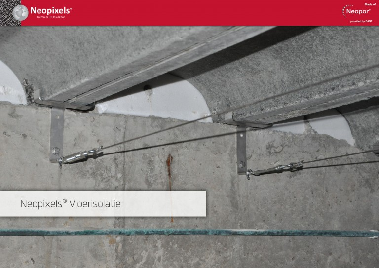

Vloerisolatie Neopixels EPS parels
Bespaar ruim € 200,- per jaar door vloerisolatie
Neopixels vloerisolatie is een innovatief gepatenteerd systeem dat wordt toegepast als na-isolatie bij houten vloeren en betonvloeren.
Neopixels vloerisolatie verbetert niet alleen het leefklimaat en algeheel comfort in de ruimte, maar verduurzaamt ook uw woning.
Neopixels zorgt voor minder tocht vanuit de kruipruimte en een gelijkmatige verwarming in de woning.
| Toepassing | onderzijde vloer, hout of beton |
| Materiaal | reflectiefolie |
| Isolatiewaarde | Rc waarde 4,27 (m²K/W) |
| Verwerking | Bij beton op spandraden onder de vloer |
| Garantie | 10 jaar op product en verwerking |
| Prijsindicatie | 46,- p/m² incl. btw en verwerking; |
| Subsidie mogelijk | Ja, ISDE, klik hier |
| Besparing / jaar | ca. €220,- per 50 m² |
Unieke combinatie van grijze EPS-parels en aluminiumreflectiefolie
Dampopen isolatie, waardoor vocht weg kan ventileren
Kent de mogelijkheid om in de toekomst nog leidingen aan te leggen
Maatschappelijk en verantwoordelijk in Nederland geproduceerd
Aanbevolen combinaties
-Neopixels is toe te passen in vochtige kruipruimten zonder bodem afdekken.
-Neopixels wordt bij houtenvloeren tussen de balken bevestigd, terwijl bij betonnen vloeren worden de zakken opgehangen met kabels.
Het isoleren van een betonnen vloer met Neopixels vloerisolatie
1. Bevestigen
De matrasfolie wordt onder de vloer bevestigd.
2. Vullen
De matrasfolie onder de vloer wordt gevuld
met grijze EPS-parels van Neopixels.
3. Besparen
U begint direct met besparen!

Vergelijk meer producten
Dakisolatie
Platdakisolatie IKO EnerthermGeluid
Binnenwandsysteem HV70 Van FaayEco-Baffles Van VRK
Geluidisolatie Isolgomma Van Imbema
Gevel
BuitenisolatiegevelHoutvezelisolatie Van Gutex
Isolatie Isovlas PL Plaat
Spouwisolatie HR++ Neopixels EPS Parels
Glas
Glasfolie van HomechillHR++ Isolatieglas
Renovatieglas en Kozijnen
Vloer
Bodem afsluiting KalkkorrelsReflectiefolie Tonzon